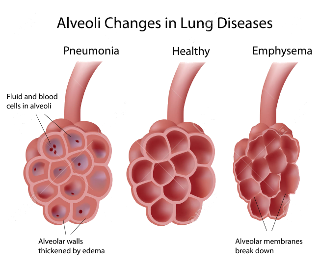

Pneumonia
Introduction
Lung infection caused by bacteria, a virus or fungi.
Symptoms can vary from mild to severe.
Treatment depends on: cause of pneumonia, severity of symptoms, age and overall health
Can be prevented by: annual flu shot, frequently handwashing and getting vaccine for pneumococcal pneumonia
Signs and Symptoms of Pneumonia
- Chest pain when you breathe or cough
- Confusion or changes in mental awareness (in adults age 65 and older)
- Cough, which may produce phlegm
- Fatigue
- Fever, sweating and shaking chills
- Lower than normal body temperature (in adults older than age 65 and people with weak immune systems)
- Nausea, vomiting or diarrhea
- Shortness of breath
High Risk Group
It is important that people in these high-risk groups see a doctor
- Adults older than age 65
- Children younger than age 2 with signs and symptoms
- People with an underlying health condition or weakened immune system
- People receiving chemotherapy or taking medication that suppresses the immune system
Pathophysiology of Pneumonia
SBAR Report to Physician about a critical situation
Nursing Intervention
| Nursing Intervention | Rationale |
|---|---|
| Assess the rate and depth of respirations and chest movement | Tachypnea, shallow respirations and asymmetric chest movement are frequently present because of discomfort of moving chest wall and/or fluid in lung. |
| Auscultate lung fields, noting areas of decreased or absent airflow and adventitious breath sounds: crackles, wheezes. | Decreased airflow occurs in areas with consolidated fluid. Bronchial breath sounds can also occur in these consolidated areas. Crackles, rhonchi, and wheezes are heard on inspiration and/or expiration in response to fluid accumulation, thick secretions and airway spasms and obstruction. |
| Elevate head of bed, change positio frequently | Doing so would lower the diaphragm and promote chest expansion, aeration of lung segments, mobilization and expectoration of secretions. |
| Teach and assist patient with proper deep=breathing exercises. Demonstrate proper splinting of chest and effective coughing while in upright position. Encourage him to do so ofter | Deep breathing exercises facilitates maximum expansion of the lungs and smaller airways. Coughing is a reflex and a natural self-cleaning mechanism that assists the cilia to maintain patent airways. Splinting reduces chest discomfort and an upright position favors deeper and more forceful cough effort. |
| Suction as indicated: frequent coughing, adventitious breath sounds, desaturation related to airway secretions. | Stimulates cough or mechanically clears airway in patient who is unable to do so because of ineffective cough or decreased level of consciousness |
| Force fluids to at least 3000 mL/day (unless contraindicated, as in heart failure). Offer warm, rather than cold fluids. | Fluids, especially warm liquids, aid in mobilization and expectoration of secretions. |
| Assist and monitor effects of nebulizer treatment and other respiratory physiotherapy: incentive spirometer, IPPB, percussion, postural drainage. Peform treatments between meals and limit fluids when appropriate. | Nebulizers and other respiratory therapy facilitates liquefaction and expectoration of secretions. Postural drainage may not be as effective in interstitial pneumonias or those causing alveolar exudate or destruction. Coordination of treatments and oral intake reduces likelihood of vomiting with coughing, expectorations. |
| Administer medications as indicated; mucolytics, expectorants, bronchodilators, analgesics. | Aids in reduction of bronchospasm and mobilization of secretions. Analgesics are given to improve cough effort by reducing discomfort, but shold be used cautiously because they can decrease cough effort and depress respirations. |
| Provide supplemental fluids; IV | Room humidification has been found to provide minimal benefit and is thought to increase the risk of transmitting infection. |
| Monitor serial chest x-rays, ABGs, pulse oximetry readings | Followers progress and effects of the disease process, therapeutic regimen, and may facilitate necessary alterations in therapy. |
| Assist with bronchoscopy and/or thoracentesis, if indicated | Occasionally needed to remove mucous plugs, drain purulent secretions, and/or prevent atelectasis. |
| Urge all bedridden and postoperative patients to perform deep breathing and coughing exercises frequently | To promote full aeration and drainage of secretions. |